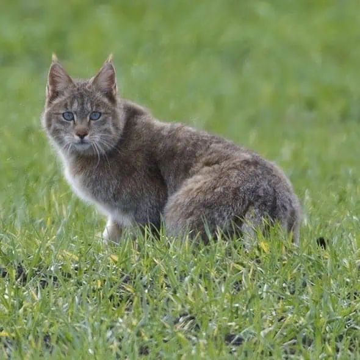
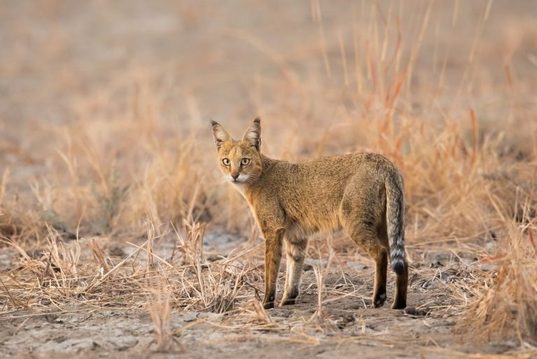
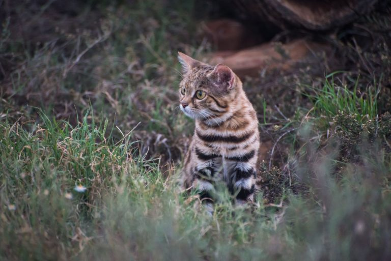
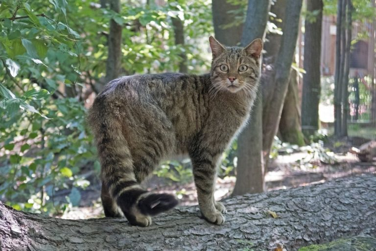
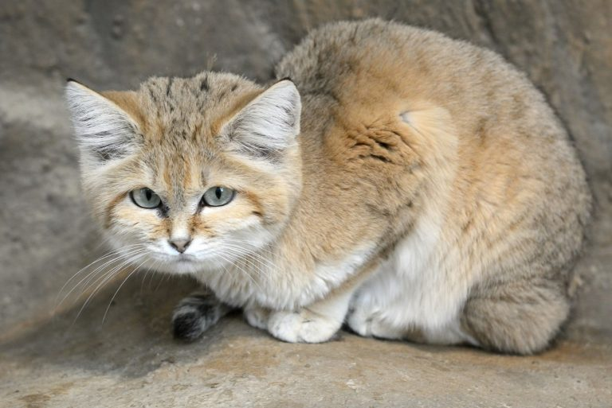
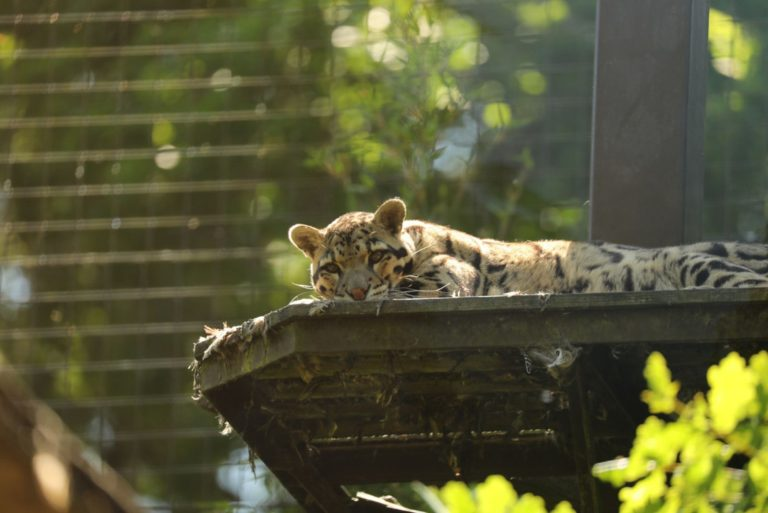
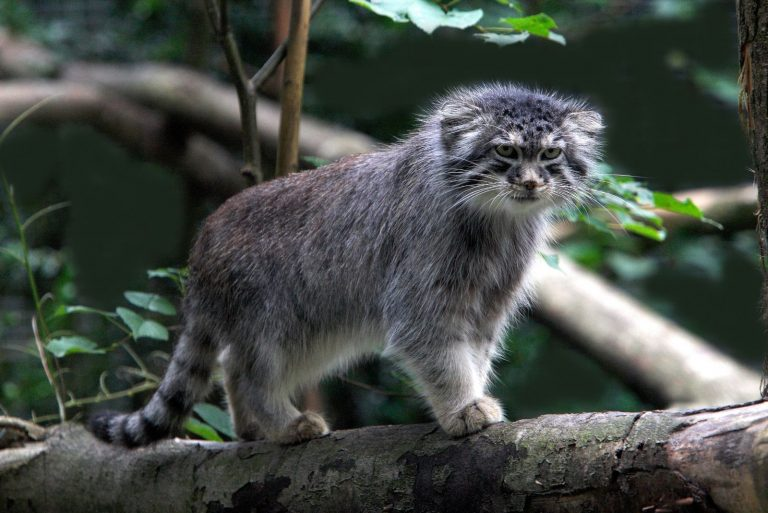
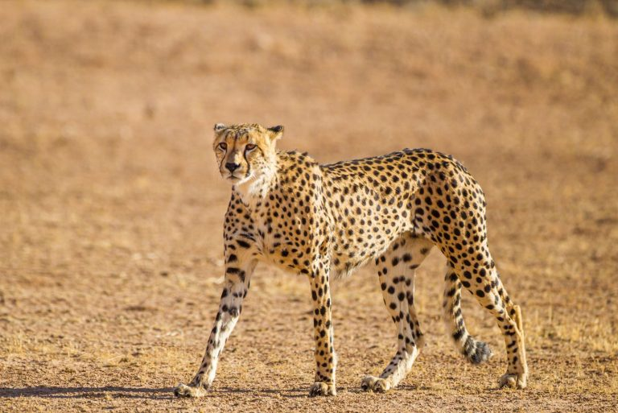
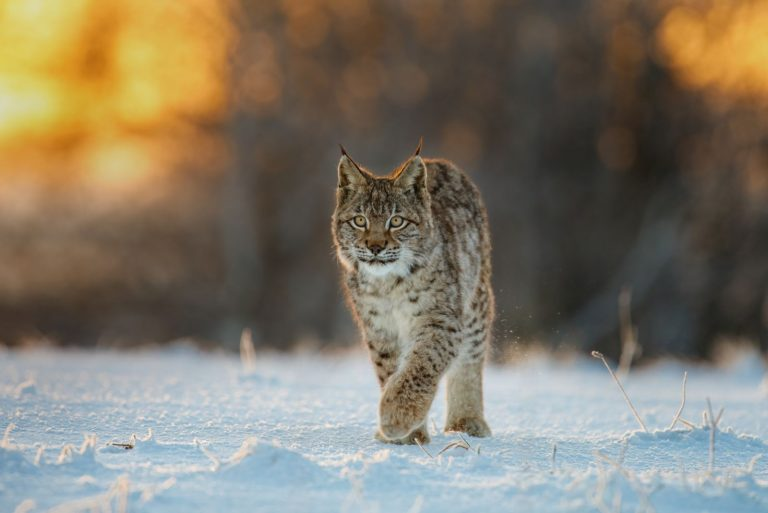
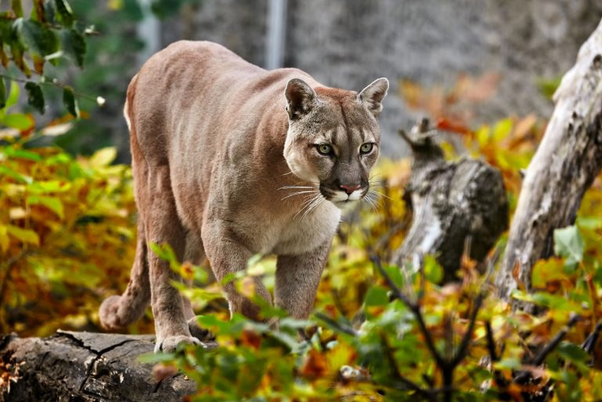

Many species of cats remain in the wild, and a pig portion of them are now endangered due to habbitat loss, hunting, or climate change. Most of u know about bigger cats like Tigers, lions and such but there a lot more of them.
|  |
| Habitat:Western China |
| Description:The Chinese mountain cat is adapted to living in rocky, arid environments and preys on small mammals such as pikas and rodents. It is a solitary cat that is primarily active at dawn and dusk. |
|  |
| Habitat:India, Middle East, Southeast Asia |
| Description:It is a versatile and adaptable species that can live in a range of habitats, including forests, grasslands, swamps, and agricultural areas. Jungle cats are solitary and territorial animals that hunt various prey, including small mammals, birds, and reptiles. They are active during the day and use vocalizations, scent marking, and visual displays to communicate with other cats. |
|  |
| Habitat:South Afrika |
| Description:Description: Black-footed cats are nocturnal and solitary animals that hunt mostly rodents and small birds. They are adaptable and can survive in a variety of habitats, including semi-arid regions, but they are found mainly in areas with a reliable source of water. |
|  |
| Habitat:European forests, grasslands, and mountainous areas. |
| European wildcats are solitary and territorial animals that hunt a variety of prey, including rodents, birds, and rabbits. They are active mainly at dawn and dusk and use vocalizations, scent marking, and visual displays to communicate with other cats. |
|  |
| Habitat:North Africa, Central Asia |
| Sand cats are nocturnal and solitary animals that hunt small mammals, birds, and reptiles. They are well-camouflaged in their sandy habitat and are difficult to spot, making them little-known and elusive. |
|  |
| Habitat: Indonesia |
| Sunda leopard cats are agile climbers and nocturnal hunters that prey on small mammals, birds, and reptiles. They are shy and elusive animals that are rarely seen by humans. |
|  |
| Habitat: Eastern Asia |
| The Pallass cat (Otocolobus manul), also known as the manul, is a small wild cat found in the grasslands and montane steppes. It is a stocky cat with a thick coat, short legs, and a round face, and it is adapted to living in cold, dry environments. |
|  |
| Habitat:Africa and a small part of Iran |
| It is the fastest land animal in the world, capable of reaching speeds of up to 75 mph (120 km/h) in short bursts. Cheetahs are adapted to living in open, grassland environments and are known for their slender build, long legs, and distinctive black spots. They are carnivorous and hunt a variety of prey, including antelopes and gazelles. Cheetahs are generally solitary and territorial animals, although females may live in small groups with their offspring. |
|  |
| Habitat:A variety of forests, grasslands, and mountainous areas across Europe and Asia |
| The Eurasian lynx is a medium-sized wild cat. It is the largest lynx species and is known for its long legs, tufted ears, and distinctive coat pattern. Eurasian lynxes are solitary and territorial animals that hunt a variety of prey, including rabbits, hares, and small mammals. They are skilled climbers and have excellent eyesight, hearing, and smell, which they use to locate their prey. The Eurasian lynx is listed as Near Threatened by the International Union for Conservation of Nature (IUCN) due to habitat loss, poaching, and conflict with humans. Conservation efforts are underway to protect and preserve lynx populations in the wild. |
|  |
| Habitat:North and South America. |
| Pumas are adaptable and solitary animals that are known for their powerful bodies, strong legs, and distinctive coat pattern. They are carnivorous and hunt a variety of prey, including deer, elk, and other small mammals. Pumas are skilled climbers and are able to jump up to 20 feet (6 meters) in the air to catch prey. |